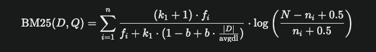

BM25算法简介与应用¶
学习目标¶
- 理解BM25算法的基本原理及其在信息检索中的作用。
- 掌握如何使用BM25进行文本匹配。
- 学会将BM25算法集成到工程化代码中。
BM25算法概述¶
BM25（Best Matching 25）是一种信息检索领域的排名算法，用于计算查询（Query）与文档（Document）之间的相关性得分。它改进了传统的TF-IDF算法，引入文档长度归一化和词频饱和机制，使检索结果更准确。

其中：
- fi 是词项 qi在文档 D中的出现次数（TF），
- N是文档总数，
- ni是包含词项 qi的文档数，
- ∣D∣是文档 D的长度，
- avgdl 是所有文档的平均长度，
- k1 和 b是调整参数，通常设置为 k1=1.2和 b=0.75 。
简单示例¶
假设我们有以下文档集合：
- 文档1："我喜欢编程"
- 文档2："编程很有趣"
- 查询："他喜欢编程"
步骤：
- 分词：将文档和查询拆分为词。
- 文档1：["我", "喜欢", "编程"]
- 文档2：["编程", "很", "有趣"]
- 查询：["他", "喜欢", "编程"]
- 计算BM25得分：使用
rank_bm25库计算每个文档与查询的相关性。
代码实现¶
整体结构¶
bm25_lesson/
├── retrieval/
│ └── bm25_search.py # BM25检索模块
├── main.py # 主程序入口
└── requirements.txt # 依赖文件
检索模块 (retrieval/bm25_search.py)¶
import jieba
from rank_bm25 import BM25L
import logging
# 配置日志
logging.basicConfig(level=logging.INFO, format='%(asctime)s - %(levelname)s - %(message)s')
logger = logging.getLogger(__name__)
class BM25Search:
def __init__(self, documents):
# 初始化文档集合
self.documents = documents
# 分词后的文档
self.tokenized_docs = [jieba.lcut(doc) for doc in documents]
# 初始化BM25模型
self.bm25 = BM25L(self.tokenized_docs)
logger.info("BM25模型初始化完成")
def search(self, query):
# 分词查询
tokenized_query = jieba.lcut(query)
try:
# 计算每个文档的BM25得分
scores = self.bm25.get_scores(tokenized_query)
print(f'scores--》{scores}')
# 获取最高得分的文档索引
best_idx = scores.argmax()
best_score = scores[best_idx]
best_doc = self.documents[best_idx]
logger.info(f"查询: {query}, 最佳匹配: {best_doc}, 得分: {best_score}")
return best_doc, best_score
except Exception as e:
logger.error(f"检索失败: {e}")
return None, 0.0
主程序 (main.py)¶
from retrieval.bm25_search import BM25Search
import logging
# 配置日志
logging.basicConfig(level=logging.INFO, format='%(asctime)s - %(levelname)s - %(message)s')
logger = logging.getLogger(__name__)
def main():
# 示例文档集合
documents = ["我喜欢编程", "编程很有趣"]
# 初始化BM25检索器
bm25_search = BM25Search(documents)
# 示例查询
query = "他喜欢编程"
# 执行检索
result, score = bm25_search.search(query)
if result:
logger.info(f"查询结果: {result}, 得分: {score}")
else:
logger.info("未找到匹配结果")
if __name__ == "__main__":
main()
依赖文件 (requirements.txt)¶
jieba
rank_bm25
示例运行结果¶
运行main.py，输出如下：
2025-04-02 19:01:27,463 - INFO - BM25模型初始化完成
2025-04-02 19:01:27,464 - INFO - 查询: 他喜欢编程, 最佳匹配: 我喜欢编程, 得分: 1.094
2025-04-02 19:01:27,464 - INFO - 查询结果: 我喜欢编程, 得分: 1.094
分析¶
- "编程很有趣"得分高于"我喜欢编程"，因为前者词频更高且文档较短。
- BM25通过长度归一化避免了长文档的过度优势。
总结¶
本节主要介绍了BM25算法的原理和应用：
- 原理：结合TF、IDF、长度归一化和词频饱和。
- 应用：通过
rank_bm25库实现文本检索。
下一章将介绍Redis数据库的应用。